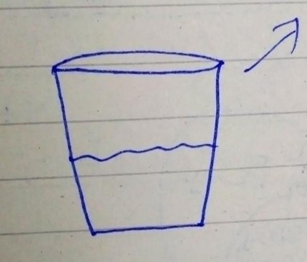
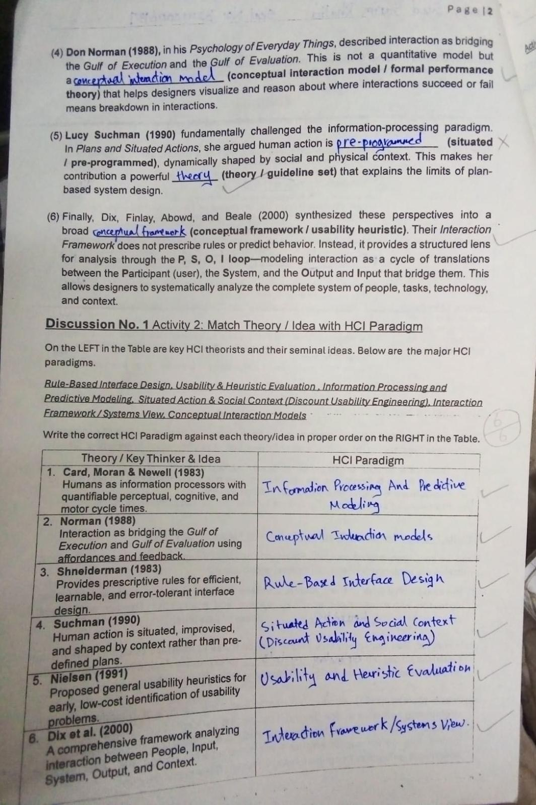

Week 1
Human Computer Interaction builds a connection between the following fields:
- Cognitive Psychology
- Computer Science
- Design

My Perspective: This glass is half filled with water.
Unique Perspective: This glass is half filled and half empty.
Vocabulary: Attention

Sketch of a dispenser

Connection between HCI and different fields
Difference between UI & UX:
- UI: User Interface
- UX: User Experience
Daily Interface Examples:
- GUI
- CLI
- Touch-based Interface
- Voice-based Interface
- Gesture-based Interface
Human Process Model is similar to CNN. Both receive information, process it, and store it as short-term or long-term memory.* CNN is an AI model used to generate images and videos.
Week 2
Memory Type / Time
Sensory Memory – Sensible
STM – Seconds or milliseconds
LTM – Years
Chain of Brain Process
- Sensation
- Attention
- Perception
- Learning
- Memory
- Thinking
- Decision Making
Donald Norman’s Analytical Model (7 Stages of Action)

Graph explaining human-computer interaction
Week 3 – Quiz
Quiz Pages:




Week 4
Whether the paper is easy or not, I must work hard. If I give my best, exams will automatically become easier.
Common HTML Errors:
Forgetting to close tags, incorrect nesting, mixing tags, etc.
Activity: Incomplete